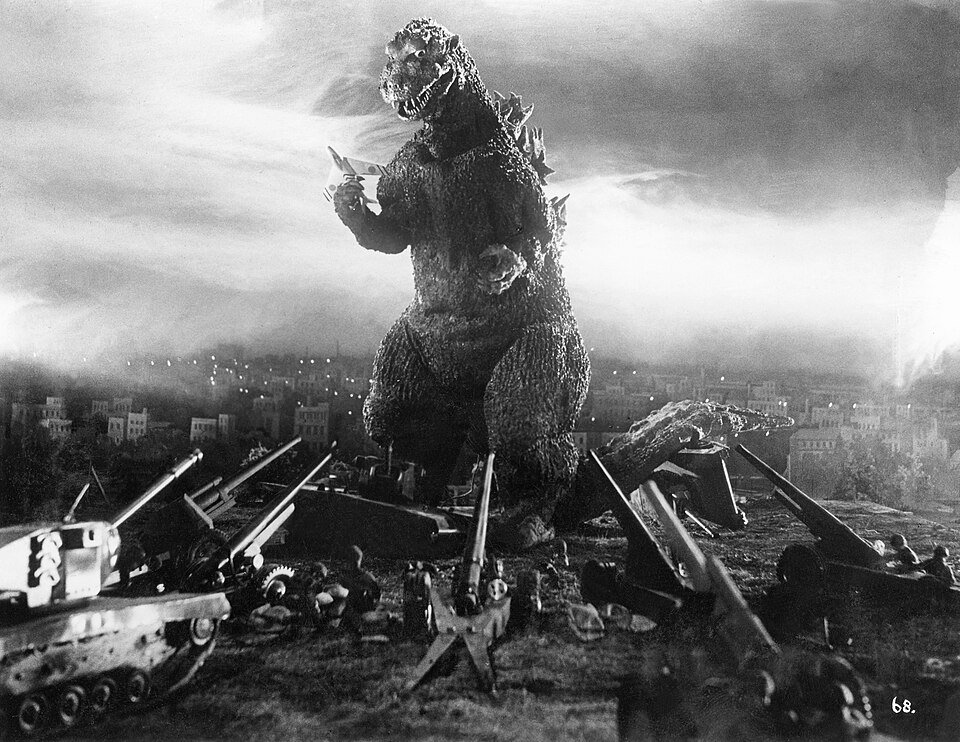

Godzilla, Production Still
Ishirō Honda · 1954 · Production still, black and white
In copyright. Look and learn: shown for study, not for download.
The first Godzilla suit weighed 100 kilograms. Haruo Nakajima and Katsumi Tezuka were chosen to wear it for their strength and endurance, and at the first fitting Nakajima fell over inside it, because it was made of heavy latex and stiff materials. That suit was cut in two for partial shots and close-ups. A lighter one was built for the full-body shots, and even in that Nakajima could last only three minutes before passing out.